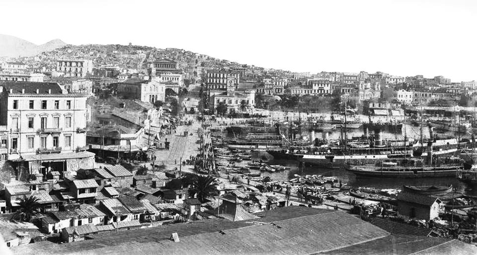

Μικρη Ιστορια
Η λέξη Πειραιάς προέρχεται από την αρχαία ελληνική γλώσσα και σημαίνει πέρασμα. Σύμφωνα με έρευνες η περιοχή ήταν νησί και χωριζόταν από την Αττική με Λιμνοθάλασσα.

Τα τείχη και πολλά μνημεία της περιοχής γκρεμίστηκαν κατά την πολιορκία του Ρωμαίου στρατηγού Σύλλα. Ενώ αργότερα Γοτθικά φύλα θα λεηλατήσουν την περιοχή οδηγώντας στην ερημοποίηση.
Ο Πειραιάς αλλάζει διοικήσεις και ονόματα,
- Oι Βενετοί θα τον ονομάσουν Πόρτο Λεόνε
- Oι Βυζαντινοί λιμάνι του Δράκου
- Oι Τούρκοι Ασλάν Λιμάν